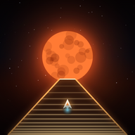
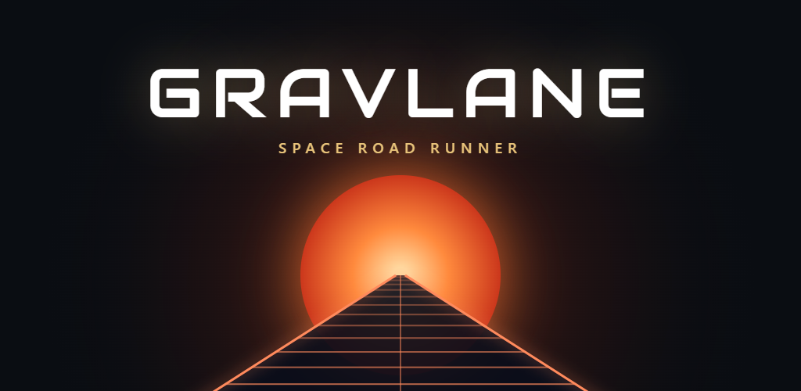

A space road racer for Android
A modern spiritual successor to SkyRoads: five lanes of road suspended in space, 25 levels that never explain themselves, and a level editor in which you have to beat your own level before you can publish it. Free, with no ads and no in-app purchases.

The game
GRAVLANE is a fast, brutal arcade racer set on a road suspended in open space. Four worlds carry you from a dying sun, through the wreckage of dead stars, into a place where gravity stops obeying the rules. Nineteen tile types — fire, crumbling ground, zero-gravity fields, magnets, ghost tiles that are only pictures of tiles — and the game explains none of them in advance. You learn what a tile does by surviving it. Death restarts you in about a second, so failure costs almost nothing and the levels are built to be memorised rather than reacted to.
Released September 2026 for Android. Built with three.js and WebAudio, wrapped with Capacitor. Every graphic, ship, star and note is generated in code.
Trailer
Screenshots


GRAVLANE Publisher
GRAVLANE Publisher is a small private tool used only by the developer of GRAVLANE. It sends the game's own gameplay clips to the developer's own TikTok account (@gravlane_srr), as drafts or as posts the developer approves. It is not offered to the public and has no other users.
- It only works with the developer's own TikTok account, signed in by the developer.
- It does not read or store other TikTok users' data, and it never sells or shares TikTok data.
- Nothing is posted unless the developer presses the post button.
Read the Publisher privacy policy and the Publisher terms of service.
About the developer
GRAVLANE is the work of one person. It was built because SkyRoads (Bluemoon Interactive, 1993) never got the successor it deserved, and it is free because it was never meant to be a business.
Find GRAVLANE
TikTok Instagram Facebook Bluesky Mastodon X
Contact
gravlane.support@gmail.com — questions about the game, press requests, or help with your data.